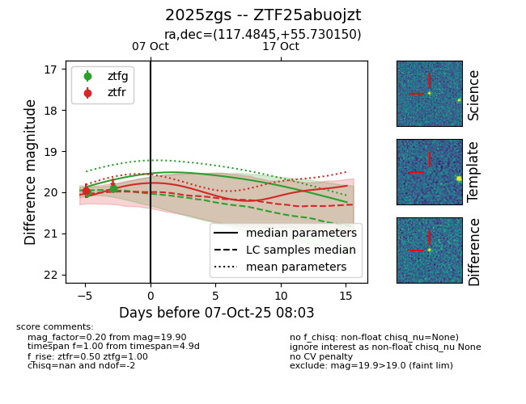
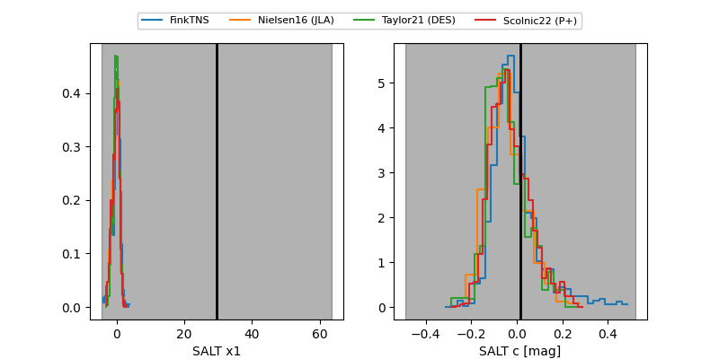

FINK: ZTF25abuojzt
Lasair: ZTF25abuojzt
ALeRCE: ZTF25abuojzt
TNS: 2025zgs
YSE: 2025zgs
ZTF25abuojzt (ztf,fink)
2025zgs (tns,yse)
equatorial (ra, dec) = (117.4845,+55.73015)
galactic (l, b) = (162.0228,+30.22239)


last ztfg=19.90, ztfr=19.96
2 ztfg, 1 ztfr detections